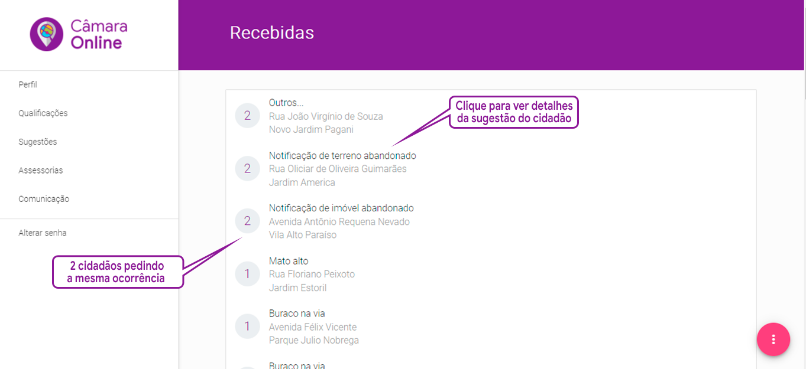
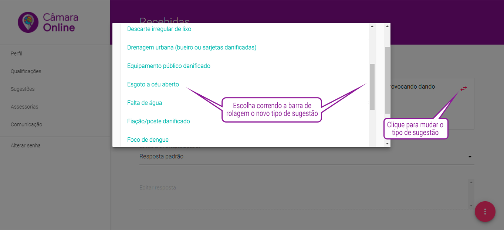
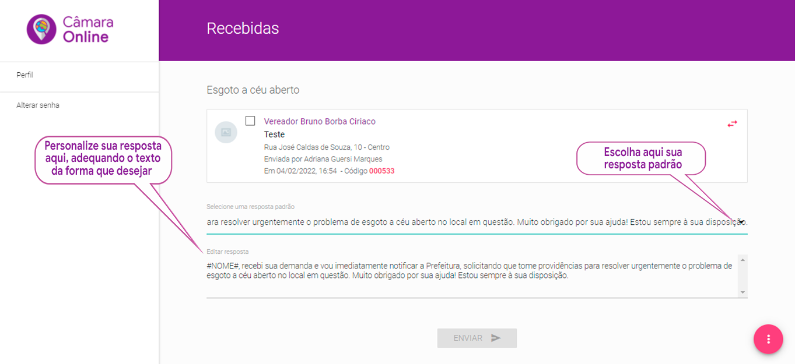

Checando se existem demandas para serem visualizadas
No painel de controle dos parlamentares ou dos assessores, você acessa diretamente o estoque de demandas recebidas, sem ainda terem sido visualizadas, clicando no retângulo (widget) cinza, com o rótulo ”RECEBIDAS”.
Esse Widget (quadrado na parte superior da tela) pode estar piscando, no caso de ele conter sugestões recebidas, sem ter sido ainda visualizadas pelo parlamentar ou por seu assessor.
Como a sugestão está organizada
Uma vez clicado o widget “Recebidas”, você verá o estoque de solicitações efetuadas por cidadãos e encaminhadas para que você faça a intermediação da solução. Estas demandas estão organizadas por quantidade de demandas de mesmo tipo e mesmo endereço.
Isto é feito para que você possa saber quais são as demandas mais pedidas pelos munícipes.

Tela das sugestões recebidas
Ao receber uma sugestão por parte do cidadão, você clica no Rótulo contendo o tipo de sugestão, na frente do ícone com a quantidade de cidadãos que fizeram a mesma ocorrência. Depois de seu clique, a tela se abrirá para um detalhamento da ocorrência, mostrando a descrição feita pelo cidadão, a data e horário da ocorrência e, se o cidadão optou por fotografar, a imagem da mesma.
Reclassificando uma sugestão para o tipo correto
Você poderá identificar uma demanda recebida que foi classificada pelo cidadão em um tipo incorreto de ocorrência, seja por inabilidade na operação do celular, seja pela dificuldade de leitura, etc.
O atendimento eficaz da solicitação do cidadão depende da correção do enquadramento da ocorrência, tendo em vista que os conteúdos das indicações ou requerimentos são personalizados para o tipo de sugestão enviada.

Tela para mudar o "Tipo de sugestão"
Neste caso, para você transferir a demanda do munícipe para outro tipo de sugestão, você clica no icone (Caixa de seleção) ao lado da miniatura da foto, clica no icone de transferência (), posicionado a direita da descrição do cidadão, escolhe o tipo correto de sugestão e clica no botão ENVIAR.
Ao fazer isso, essa ocorrência é requalificada para o "Tipo de sugestão" certo, vinculando a mesma ao órgão municipal que realmente é o responsável pela resolução do problema, como se o cidadão tivesse executado corretamente o procedimento.
Desconsiderando uma sugestão
Uma outra exceção se dá quando você recebe uma ocorrência, baseada num tipo correto de sugestão, porém fora da capacidade de resolução da prefeitura municipal, por exemplo em virtude de a jurisdição ser do estado ou da federação, ou em decorrência de a resolução estar pendente por motivos judiciais, ou ainda por depender de processos licitatórios cujo desfecho demore muito tempo, etc.
Nesse caso, para você desconsiderar a sugestão do munícipe, clique no Check Box (Caixa de seleção) ao lado da miniatura da foto, clique no campo “Selecione uma resposta padrão” e verifique se já foi gravada uma resposta do tipo DESCONSIDERADA.
Ao clicar na caixa de seleção “Selecione uma resposta padrão” o sistema apenas te mostrará respostas padrão do tipo “EM PROCESSAMENTO” e “DESCONSIDERADA”. Você identificará o tipo resposta pelo rótulo da mesma, que estará escrito entre colchetes, a esquerda do texto. Portanto para informar ao cidadão que aquela demanda reportada por ele não pode ser processada pela Câmara Municipal, escolha um tipo de respostas que comece com “[DESCONSIDERADA]”.
Ao escolher a resposta do tipo “DESCONSIDERADA”, o mesmo conteúdo será repetido no campo abaixo, “Editar a resposta”. Aqui nesse campo você pode alterar o conteúdo da resposta de modo a deixa-la mais explicativa para o cidadão, se for necessário.
ATENÇÃO:
Se você não localizou nenhuma resposta padrão do tipo “DESCONSIDERADA”, você deve pedir para o grupo gestor gravar uma, conforme explicação acima dessa tarefa. O sistema não processa nenhuma resposta apenas escrita no campo “Editar a resposta”, é necessário que tenha sido registrada previamente uma resposta padrão daquele tipo.
Alterando o conteúdo da Resposta padrão
A edição de uma resposta padrão se dá simplesmente alterando-se o conteúdo da Resposta Padrão gravada previamente na linha “Editar Resposta”. O sistema “Câmara Online” já facilita a sua edição repetindo o conteúdo da Resposta Padrão que foi inserida previamente para que você possa apenas alterar uma parte do conteúdo. Entretanto, se for necessário alterar completamente a mensagem, essa alteração se dá da mesma forma.
Ao final da alteração de sua resposta da forma mais conveniente, clique no botão enviar para o cidadão receber o resultado da Resposta Padrão alterada por você.

Tela de edição de resposta
ATENÇÃO:
A alteração feita vale somente para aquela demanda em particular. Portanto, a próxima vez que você for escolher a mesma reposta para uma demanda similar, esta se apresentará na forma original, sem edição.